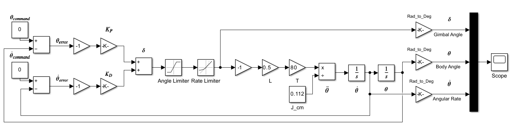
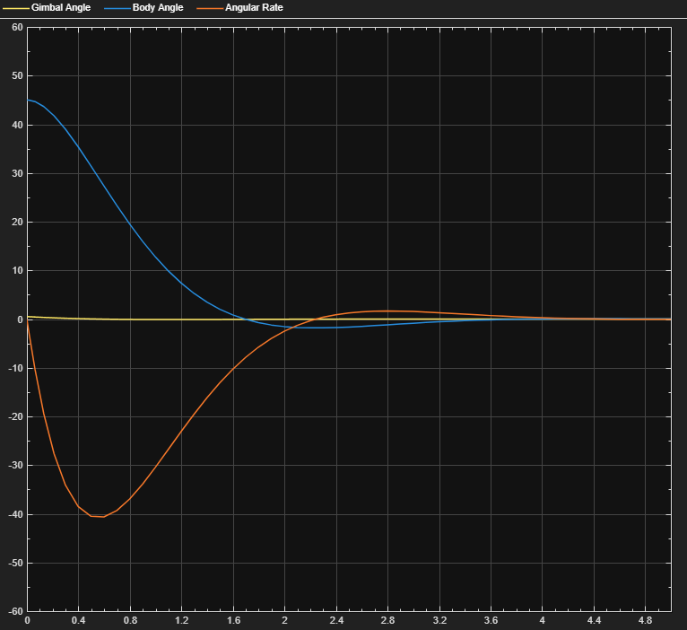

Thrust-Vectoring Rocket Project
A controls-focused rocket simulation project exploring how thrust vectoring can be used to stabilize a rocket’s body angle using feedback control, actuator limits, and simplified rotational dynamics.
Project Overview
This project focused on developing a simplified thrust-vectoring rocket model and using feedback control to stabilize the vehicle body angle. The goal was to connect control theory to a practical aerospace application by modeling how a gimbaled motor can generate corrective torque and reduce angular motion over time.
I used MATLAB and Simulink to build the control architecture, test controller behavior, and observe how the simulated rocket responded under different damping configurations. This project helped me practice modeling, controller tuning, block diagram development, and interpreting time-response behavior from simulation outputs.
My Role
I developed the simulation structure for the body-angle control problem, created the Simulink block diagram, and studied how feedback gains affected the system response. The model used a commanded body angle and angular rate, compared them against the simulated vehicle response, and used the resulting errors to drive a controller.
I also worked through the control-system analysis behind the model, including proportional and derivative control behavior, closed-loop response, damping behavior, and how actuator limits affect the commanded gimbal angle.
Simulink Control Architecture
The Simulink model uses body-angle and angular-rate commands, calculates the corresponding errors, sends those errors into a controller, then passes the commanded gimbal angle through an angle limiter and rate limiter before it enters the plant model. The plant outputs the gimbal angle, body angle, and angular rate for evaluation.
This structure made it possible to test how the controller affected vehicle attitude response while also keeping the simulation closer to a real actuator system, where the motor gimbal cannot move infinitely fast or beyond its physical range.

Simulink block diagram for the thrust-vectoring body-angle simulation.
Simulation Output
The scope output shows the simulated response for one damping configuration. The plotted signals show the gimbal angle, body angle, and angular rate changing over time as the controller works to reduce the initial body-angle error and bring the system toward a stable response.
This output helped evaluate whether the controller was producing a reasonable damped response. Instead of allowing the rocket body angle to diverge or oscillate indefinitely, the simulation shows the response settling toward equilibrium as the control action reduces the angular motion.

Scope output from one damping configuration showing the simulated thrust-vectoring response.
Technical Approach
The project began with a simplified rotational model of a thrust-vectoring rocket. The body angle and angular rate were treated as the main feedback states, while the gimbal angle acted as the control input that changes the thrust direction and creates a restoring moment.
I used feedback control to compare the commanded body angle and angular rate against the simulated response. The controller then generated a commanded gimbal angle, which was limited by actuator angle and rate constraints before being applied to the plant model. This allowed the simulation to represent both control logic and basic actuator behavior.
Control Model
- Modeled body-angle error and angular-rate error
- Used proportional and derivative feedback concepts
- Generated a commanded motor gimbal angle
- Included angle and rate limiting before the plant
- Observed body-angle response using Simulink outputs
Simulation Focus
- Studied how damping affects rocket attitude response
- Connected controller gains to closed-loop behavior
- Evaluated overshoot, settling behavior, and angular-rate response
- Used Simulink to visualize signal flow and system response
- Practiced translating control theory into a working simulation
Skills Used and Developed
Technical Skills
- Control systems
- Feedback control
- Proportional and derivative control
- Rocket rotational dynamics
- Simulink block diagram modeling
- Actuator angle and rate limiting
- Time-response interpretation
Engineering Skills
- Simulation debugging
- Controller tuning
- System modeling
- Technical visualization
- Iterative testing
- Connecting theory to implementation
- Documenting control architecture
Selected Contributions
This project demonstrates my ability to take a controls concept and build a working simulation around it. I created a Simulink architecture that connected commanded attitude states, feedback error calculations, controller logic, actuator constraints, and a plant model into a complete body-angle response simulation.
Simulation Development
- Built the Simulink control architecture for body-angle stabilization
- Included gimbal angle and rate limiting to represent actuator constraints
- Generated scope outputs to evaluate damping and settling behavior
- Used simulation results to assess control response quality
Controls Analysis
- Studied proportional and derivative control behavior
- Connected controller gains to rocket attitude response
- Analyzed damping, overshoot, and settling trends
- Practiced closed-loop thinking for aerospace control problems
What I Learned
This project helped me better understand how control theory applies to rocket attitude stabilization. Building the model in Simulink made the relationship between commanded angle, body response, controller output, actuator limits, and plant dynamics much more visible.
I also learned that a controller may look reasonable mathematically but still behave poorly if actuator limits, initial conditions, or gain values are not handled carefully. The project gave me more practice interpreting simulation plots and using those plots to improve the control design.
Future Improvements
Future improvements could include expanding the plant model to include changing mass properties, thrust variation over the motor burn, aerodynamic moments, sensor noise, actuator dynamics, and a more complete six-degree-of-freedom rocket simulation. I would also like to compare multiple controller configurations and document the effect of each gain set on damping ratio, settling time, and overshoot.